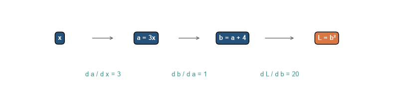

How a network computes the gradients it needs to learn
The problem
Chapter 3 showed how a gradient can tell us which way to change one setting in a model. A neural network has many settings, and each one affects the final loss through a chain of calculations. Repeating the entire calculation separately for every setting would be far too slow.
Backpropagation avoids that repetition. It keeps track of the calculations used to produce the loss, then works backwards through them. At each step, it asks one narrow question: if this value had changed a little, how much would the final loss have changed?
A small calculation to follow
We will use three simple operations:
\[
a=3x,\qquad b=a+4,\qquad L=b^2.
\]
Start with an input \(x\). Multiply it by three, add four, then square the result to obtain a loss. A neural network contains more operations, but it is built from the same idea: a calculation moves forward from inputs to a loss, and information needed for updating the model moves back through the same chain.
Level 1 - Intuition
Follow the top row first. It shows the ordinary calculation from an input to a loss. Only once that calculation is complete does the bottom row begin. It carries back the information needed to answer how the final loss would change if an earlier value were slightly different.
Figure 5.1: The forward pass produces a result; the backward pass traces how the result changed.
The top row carries values forward. Each operation takes the value on its left and produces a new one on its right. The bottom row carries a different kind of information backwards: how a small change at this point would affect the loss at the end. It does not reverse the original calculation or recover the input; it answers a new question about the effect of a small change.
Reusing one calculation
For the three-step example, the forward calculation gives us the values reached after multiplying, adding, and squaring. The backward calculation reuses those values to work out the effect of changing \(x\), then the effect of changing the earlier intermediate values. In a network, the same idea lets one forward calculation supply gradients for many parameters.
Backpropagation. A way to calculate the gradient of a loss for every adjustable part of a model without repeating the whole calculation for each part. It first runs the model forward to obtain a loss, then works backwards through the recorded operations.
Level 2 follows this calculation with numbers. The aim is to see where the backward quantities come from before writing the chain rule in full.
Level 2 - Mechanics
Set \(x=2\) in the three-step calculation. The forward pass gives one concrete value at each box. The backward pass then starts at the loss and combines the effect of each operation, one link at a time. The diagram shows those links before the arithmetic fills them in.
Code
fig, ax = plt.subplots(figsize=(8.5, 2.3))items = [(0.14, "x", blue), (0.36, "a = 3x", blue), (0.58, "b = a + 4", blue), (0.82, "L = b²", orange)]for xpos, label, colour in items: ax.text(xpos, 0.65, label, ha="center", va="center", color="white", weight="bold", bbox={"boxstyle": "round,pad=0.45", "facecolor": colour})for left, right inzip(items[:-1], items[1:]): ax.annotate("", xy=(right[0] -0.08, 0.65), xytext=(left[0] +0.08, 0.65), arrowprops={"arrowstyle": "->", "color": "#666666"})ax.text(0.25, 0.25, "d a / d x = 3", ha="center", color=teal)ax.text(0.47, 0.25, "d b / d a = 1", ha="center", color=teal)ax.text(0.70, 0.25, "d L / d b = 20", ha="center", color=teal)ax.set_xlim(0, 1); ax.set_ylim(0, 1); ax.axis("off")plt.tight_layout()plt.show()

Figure 5.2: Backpropagation combines local derivatives along the path from a parameter to the loss.
The boxes show the operations in the forward calculation. The numbers beneath the arrows describe the effect of a small change as it passes through that operation. Backpropagation combines these local effects instead of deriving the complete expression again for every parameter. In this example, the effects \(3\), \(1\), and \(20\) combine to tell us how changing \(x\) would change the loss.
The forward pass stores the intermediate values because they will be needed when the derivative is calculated. In a neural network, these intermediate values are called activations. The loss is the final output of the forward computation.
The stored values are needed to evaluate the derivative rules numerically. The derivative of \(L=b^2\) is \(2b\), so the backward pass needs the forward value \(b=10\) to obtain the local derivative 20. A neural network repeats this dependency across many operations: the derivative formula is known, but its numerical value depends on the activation produced for the current batch.
The backward pass
The backward pass works from right to left. First calculate how the loss changes with \(b\). Then calculate how \(b\) changes with \(a\). Finally calculate how \(a\) changes with \(x\).
The local derivatives are multiplied together to obtain the derivative with respect to the input. In a larger graph, the same procedure is applied at every node. If several paths lead from a parameter to the loss, their contributions are summed.
Working backwards does not reconstruct the original input or target. The procedure carries a sensitivity value. At the loss node that sensitivity starts at 1 because \(dL/dL=1\). Each preceding operation transforms the incoming sensitivity using its local derivative and sends the result to its own inputs.
Gradients and updates are separate
Backpropagation computes a gradient. An optimiser uses that gradient to update parameters. In PyTorch, loss.backward() and optimizer.step() therefore perform different operations. Confusing them makes it difficult to diagnose training failures.
The mechanics show the order of the calculation. The chain rule below supplies the rule that makes this order reusable: each operation transforms an incoming sensitivity using its own local derivative.
Level 3 - Mathematics & Code
The chain rule is the mathematical link between the forward computation and the gradients required by gradient descent. We will calculate one derivative by hand, check it with a finite difference, and then use automatic differentiation to apply the same logic to a small neural network.
The chain rule
The running example contains three functions applied in sequence. The input \(x\) is first multiplied by 3, the result is increased by 4, and the result is then squared. Writing the intermediate values explicitly gives:
The loss depends directly on \(b\). It depends on \(a\) only because \(a\) determines \(b\), and it depends on \(x\) only because \(x\) determines \(a\). To find how \(x\) affects the final loss, we therefore multiply the local sensitivities along this path.
For the computation \(L(b(a(x)))\), the chain rule gives:
The three factors answer three separate questions:
How much does the loss change when \(b\) changes?
How much does \(b\) change when \(a\) changes?
How much does \(a\) change when \(x\) changes?
At \(x=2\), the forward pass gives \(a=6\), \(b=10\), and \(L=100\). We can now calculate each local derivative at the value reached by that forward pass:
A small increase in \(x\) would therefore increase the loss by approximately 60 times that increase, locally. The derivative is not a new prediction and it is not the loss itself. It is a sensitivity of the loss to one input of the computation.
The same calculation also gives the derivative with respect to the intermediate values. Once \(dL/db=20\) is known, the derivative with respect to \(a\) is:
This is the quantity that would be passed further backwards if \(a\) were the output of an earlier layer. In a neural network, every operation receives an incoming gradient from the right, multiplies it by its local derivative, and passes the result to the left.
PyTorch records the operations used to produce loss. Calling backward() traverses that graph in reverse and stores the derivative in x.grad.
The code follows the derivation in the same order as the mathematics. a = 3 * x creates the first operation, b = a + 4 creates the second, and loss = b ** 2 creates the third. Setting requires_grad=True tells PyTorch to retain the information needed to differentiate with respect to x. The call to backward() starts at the scalar loss and applies the chain rule in reverse. The value printed from x.grad is therefore the computed value of \(dL/dx\), not a finite-difference approximation.
Checking the derivative numerically
Finite differences provide an independent diagnostic:
Finite differences are useful for gradient checks, but they are not a practical training method. With \(p\) parameters, estimating one derivative per parameter requires many additional function evaluations. Backpropagation computes all derivatives by reusing the forward graph.
The distinction can be seen in the numerical example. To estimate the derivative with respect to one value of \(x\), finite differences evaluate the entire function twice, at \(x+h\) and \(x-h\). A neural network with millions of parameters would require comparable perturbation calculations for each parameter. Backpropagation instead evaluates the network once forwards and once backwards, reusing the intermediate values and local derivative rules.
Figure 5.3: A derivative is the slope of the loss near the value reached by the forward pass; the tangent is a local approximation, not the full loss curve.
The tangent line touches the loss curve at the value produced by the forward pass. Its slope is 60, so an increase of roughly 0.01 in \(x\) predicts an increase of roughly 0.6 in the loss near \(x=2\). The nearby points show why this is a local statement: as the points move further away, the curvature of the loss makes the tangent approximation less exact. Finite differences estimate this local slope from two function evaluations. Backpropagation calculates the same sensitivity from the graph’s derivative rules.
Every parameter tensor receives a gradient. The gradient shapes match the parameter shapes because each weight and bias has its own local contribution to the final loss.
The network in this example has two inputs, a hidden layer with three units, a Tanh activation, and one output. The forward pass produces two predictions, one for each row in x_batch. The mean squared error reduces those two prediction errors to one scalar loss. Because the backward pass begins with that scalar, it can propagate one learning signal through the entire network and accumulate a gradient for every weight and bias.
Figure 5.4: A computation graph carries values forward and gradient signals backward.
Level 4 - Research & Systems
Backpropagation is computationally efficient, but it is not free. The backward pass requires information from the forward pass, and large models must store, recompute, and communicate that information. This level examines those costs and the implementation choices used to manage them.
Why the forward pass uses memory
Backpropagation needs intermediate activations to calculate local derivatives. A training system therefore stores some of the values produced during the forward pass. For a deep network with long sequences and large hidden states, activation storage can consume more memory than the parameters themselves.
Inference normally requires only the forward computation. Training requires the forward computation, stored activations, backward computation, gradients, and optimiser state. This is one reason why a model can be inexpensive to run after training but expensive to train.
For a batch of sequences, the model produces an activation tensor at every layer and token position. Increasing the batch size, sequence length, hidden width, or number of layers increases the amount of activation data that may need to remain available until the backward pass reaches that operation. Parameter count alone therefore does not determine training memory.
Activation checkpointing
Activation checkpointing reduces memory use by storing only selected intermediate values. During the backward pass, the system recomputes the missing values. The trade-off is explicit: less memory is exchanged for more computation.
Figure 5.5: Activation checkpointing reduces stored activations by repeating part of the forward computation.
The values in the figure are illustrative rather than benchmark measurements. They show the direction of the trade-off. Storing every activation minimises recomputation but uses more memory. Checkpointing stores selected boundaries and reruns the missing forward operations when their values are needed during the backward pass. The exact saving depends on the architecture and checkpoint schedule (Chen et al. 2016).
The technique illustrates a general systems principle. The mathematical computation graph is fixed, but implementations choose how much of that graph to materialise, recompute, fuse, or distribute. Training performance therefore depends on memory bandwidth and kernel implementation as well as on arithmetic complexity.
Automatic differentiation is broader than backpropagation
Automatic differentiation combines elementary derivative rules to calculate exact derivatives up to numerical precision. Reverse-mode automatic differentiation is closely related to backpropagation and is efficient when a computation has many inputs and a small number of outputs, as is common for neural-network losses (Baydin et al. 2018).
Frameworks such as PyTorch and JAX construct or transform computation graphs and apply these rules automatically. This removes the need to derive every large-network gradient by hand, but it does not remove the need to understand the graph. In-place operations, detached tensors, incorrect reductions, and stale gradients can all produce training errors that the framework cannot infer from the user’s intention.
For example, detaching a tensor tells the framework to stop tracking how it was produced. Operations before that point then receive no gradient from the later loss. This may be intentional, as in a frozen component, or accidental. Automatic differentiation guarantees that the recorded graph is differentiated; it cannot guarantee that the recorded graph represents the model the author intended.
Distributed training
In data-parallel training, several workers process different mini-batches and combine their gradients before updating the model. The calculation is mathematically similar to a larger mini-batch, but communication introduces additional constraints. Synchronisation time, network bandwidth, fault tolerance, and uneven workloads can limit scaling even when more accelerators are available (Li et al. 2020).
Suppose four workers each process 32 observations. Each worker performs its own forward and backward passes, producing a gradient from its local mini-batch. The workers then average or sum those gradients before applying one common update. The effective batch contains 128 observations, but the update cannot proceed until the gradient communication is complete. A slow worker or constrained network can therefore delay every other worker.
The chain rule remains local. The systems problem is to apply it to a large graph, store or recompute the required values, and coordinate the resulting updates across hardware.
Common misconceptions
Backpropagation is the same as gradient descent. Backpropagation computes gradients; gradient descent applies them to update parameters.
loss.backward() changes the weights. It computes and accumulates gradients. The optimiser changes the weights.
A large gradient means a parameter is important in a substantive sense. It means the loss is locally sensitive to that parameter under the current example and parameter values.
Automatic differentiation is numerical differentiation. It applies derivative rules through the computation graph; it does not estimate each derivative by perturbing the parameter.
Backpropagation explains why a prediction was made. It gives parameter sensitivities for a specified loss, not a complete human explanation.
Exercises
Describe the forward and backward passes in the running example.
Calculate \(dL/dx\) for \(a=2x\), \(b=a-1\), and \(L=b^2\) at \(x=3\).
Why are the local derivatives multiplied along a path?
Why are contributions added when multiple paths connect a parameter to the loss?
Compare finite differences with automatic differentiation.
What does loss.backward() store in a PyTorch parameter?
Why does training require more memory than inference?
Explain the memory-computation trade-off in activation checkpointing.
Why can distributed training fail to scale linearly with the number of accelerators?
Explain why a gradient should not be interpreted as a causal explanation of a prediction.
Starting with \(a=4x\), \(b=a^2\), and \(L=b+3\), calculate the forward values and \(dL/dx\) at \(x=2\).
For \(L(x)=(3x+4)^2\), use the central-difference formula with \(h=0.1\) and \(h=0.001\). Compare each estimate with the analytical gradient at \(x=2\) and explain why the estimates differ.
A parameter has gradient \(-0.4\) and an SGD learning rate of \(0.05\). State the parameter update and distinguish it from the gradient calculation.
Write a short gradient-check procedure for one parameter in the small neural network. State what quantity you would compare and one reason a mismatch could occur.
A training run is limited by activation memory rather than parameter memory. Explain why reducing batch size and enabling activation checkpointing are different interventions, and name the cost of each.
Draw a computation graph with one intermediate value used along two paths to a scalar loss. Explain why the gradient arriving at that intermediate value is the sum of contributions from both paths.
Summary
Backpropagation applies the chain rule through a computation graph. The forward pass produces predictions and a loss; the backward pass propagates derivatives from that loss to every parameter. Reusing intermediate values makes the calculation feasible for large networks. Automatic differentiation implements the procedure in modern frameworks, while checkpointing and distributed training address the memory and communication costs of applying it at scale.
Looking ahead
We can now distinguish the two operations behind ordinary neural-network training: backpropagation calculates gradients, and gradient descent uses them to update parameters. Chapter 5 introduces the smallest parameterised building block to which those operations are applied: the artificial neuron.
Further reading
The original neural-network treatment of backpropagation is provided by Rumelhart, Hinton, and Williams (1986). The practical and systems issues surrounding large-scale optimisation are discussed by Bottou, Curtis, and Nocedal (2018).
Baydin, Atilim Gunes, Barak A. Pearlmutter, Alexey Andreyevich Radul, and Jeffrey Mark Siskind. 2018. “Automatic Differentiation in Machine Learning: A Survey.”Journal of Machine Learning Research 18 (153): 1–43. https://www.jmlr.org/papers/v18/17-468.html.
Bottou, Léon, Frank E. Curtis, and Jorge Nocedal. 2018. “Optimization Methods for Large-Scale Machine Learning.”SIAM Review 60 (2): 223–311. https://doi.org/10.1137/16M1080173.
Chen, Tianqi, Bing Xu, Chiyuan Zhang, and Carlos Guestrin. 2016. “Training Deep Nets with Sublinear Memory Cost.”arXiv Preprint arXiv:1604.06174. https://arxiv.org/abs/1604.06174.
Li, Shen, Yanli Zhao, Rohan Varma, Omkar Salpekar, Pieter Noordhuis, Teng Li, Adam Paszke, et al. 2020. “PyTorch Distributed: Experiences on Accelerating Data Parallel Training.”arXiv Preprint arXiv:2006.15704. https://arxiv.org/abs/2006.15704.
Rumelhart, David E., Geoffrey E. Hinton, and Ronald J. Williams. 1986. “Learning Representations by Back-Propagating Errors.”Nature 323: 533–36. https://doi.org/10.1038/323533a0.
Source Code
---title: "Backpropagation"subtitle: "How a network computes the gradients it needs to learn"---## The problemChapter 3 showed how a gradient can tell us which way to change one setting in a model. A neural network has many settings, and each one affects the final loss through a chain of calculations. Repeating the entire calculation separately for every setting would be far too slow.Backpropagation avoids that repetition. It keeps track of the calculations used to produce the loss, then works backwards through them. At each step, it asks one narrow question: if this value had changed a little, how much would the final loss have changed?### A small calculation to followWe will use three simple operations:$$a=3x,\qquad b=a+4,\qquad L=b^2.$$Start with an input $x$. Multiply it by three, add four, then square the result to obtain a loss. A neural network contains more operations, but it is built from the same idea: a calculation moves forward from inputs to a loss, and information needed for updating the model moves back through the same chain.## Level 1 - IntuitionFollow the top row first. It shows the ordinary calculation from an input to a loss. Only once that calculation is complete does the bottom row begin. It carries back the information needed to answer how the final loss would change if an earlier value were slightly different.```{python}#| label: fig-forward-backward-intuition#| fig-cap: "The forward pass produces a result; the backward pass traces how the result changed."#| fig-alt: "A simple two-row diagram with forward values moving left to right and backward gradient information moving right to left."import matplotlib.pyplot as pltplt.style.use("seaborn-v0_8-whitegrid")blue, teal, orange ="#24527a", "#3a9188", "#d97745"fig, ax = plt.subplots(figsize=(8.5, 2.7))positions = [0.12, 0.36, 0.60, 0.84]labels = ["input x", "multiply\nby 3", "add 4", "loss"]for xpos, label inzip(positions, labels): ax.text(xpos, 0.68, label, ha="center", va="center", color="white", weight="bold", bbox={"boxstyle": "round,pad=0.45", "facecolor": blue if label !="loss"else orange}) ax.text(xpos, 0.28, "effect on\nloss", ha="center", va="center", color="white", fontsize=9, bbox={"boxstyle": "round,pad=0.35", "facecolor": teal})for left, right inzip(positions[:-1], positions[1:]): ax.annotate("", xy=(right -0.08, 0.68), xytext=(left +0.08, 0.68), arrowprops={"arrowstyle": "->", "color": blue, "lw": 1.8})for left, right inzip(positions[1:], positions[:-1]): ax.annotate("", xy=(right +0.08, 0.28), xytext=(left -0.08, 0.28), arrowprops={"arrowstyle": "->", "color": orange, "lw": 1.8})ax.text(0.5, 0.88, "first: calculate the loss", ha="center", color=blue)ax.text(0.5, 0.06, "then: trace how earlier values affect that loss", ha="center", color=orange)ax.set_xlim(0, 1); ax.set_ylim(0, 1); ax.axis("off")plt.tight_layout()plt.show()```The top row carries values forward. Each operation takes the value on its left and produces a new one on its right. The bottom row carries a different kind of information backwards: how a small change at this point would affect the loss at the end. It does not reverse the original calculation or recover the input; it answers a new question about the effect of a small change.### Reusing one calculationFor the three-step example, the forward calculation gives us the values reached after multiplying, adding, and squaring. The backward calculation reuses those values to work out the effect of changing $x$, then the effect of changing the earlier intermediate values. In a network, the same idea lets one forward calculation supply gradients for many parameters.::: {.concept-box .concept-core #concept-backpropagation data-term="Backpropagation" data-domain="Foundations"}**Backpropagation.** A way to calculate the gradient of a loss for every adjustable part of a model without repeating the whole calculation for each part. It first runs the model forward to obtain a loss, then works backwards through the recorded operations.:::Level 2 follows this calculation with numbers. The aim is to see where the backward quantities come from before writing the chain rule in full.## Level 2 - MechanicsSet $x=2$ in the three-step calculation. The forward pass gives one concrete value at each box. The backward pass then starts at the loss and combines the effect of each operation, one link at a time. The diagram shows those links before the arithmetic fills them in.```{python}#| label: fig-chain-rule-mechanics#| fig-cap: "Backpropagation combines local derivatives along the path from a parameter to the loss."#| fig-alt: "A chain of three operations labelled with local derivatives and a final product of those derivatives."fig, ax = plt.subplots(figsize=(8.5, 2.3))items = [(0.14, "x", blue), (0.36, "a = 3x", blue), (0.58, "b = a + 4", blue), (0.82, "L = b²", orange)]for xpos, label, colour in items: ax.text(xpos, 0.65, label, ha="center", va="center", color="white", weight="bold", bbox={"boxstyle": "round,pad=0.45", "facecolor": colour})for left, right inzip(items[:-1], items[1:]): ax.annotate("", xy=(right[0] -0.08, 0.65), xytext=(left[0] +0.08, 0.65), arrowprops={"arrowstyle": "->", "color": "#666666"})ax.text(0.25, 0.25, "d a / d x = 3", ha="center", color=teal)ax.text(0.47, 0.25, "d b / d a = 1", ha="center", color=teal)ax.text(0.70, 0.25, "d L / d b = 20", ha="center", color=teal)ax.set_xlim(0, 1); ax.set_ylim(0, 1); ax.axis("off")plt.tight_layout()plt.show()```The boxes show the operations in the forward calculation. The numbers beneath the arrows describe the effect of a small change as it passes through that operation. Backpropagation combines these local effects instead of deriving the complete expression again for every parameter. In this example, the effects $3$, $1$, and $20$ combine to tell us how changing $x$ would change the loss.### The forward passFor the running example, start with $x=2$:$$x=2\rightarrow a=3x=6\rightarrow b=a+4=10\rightarrow L=b^2=100.$$The forward pass stores the intermediate values because they will be needed when the derivative is calculated. In a neural network, these intermediate values are called activations. The loss is the final output of the forward computation.The stored values are needed to evaluate the derivative rules numerically. The derivative of $L=b^2$ is $2b$, so the backward pass needs the forward value $b=10$ to obtain the local derivative 20. A neural network repeats this dependency across many operations: the derivative formula is known, but its numerical value depends on the activation produced for the current batch.### The backward passThe backward pass works from right to left. First calculate how the loss changes with $b$. Then calculate how $b$ changes with $a$. Finally calculate how $a$ changes with $x$.Each operation contributes a local derivative:$$\frac{\partial L}{\partial b}=2b,\qquad\frac{\partial b}{\partial a}=1,\qquad\frac{\partial a}{\partial x}=3.$$The local derivatives are multiplied together to obtain the derivative with respect to the input. In a larger graph, the same procedure is applied at every node. If several paths lead from a parameter to the loss, their contributions are summed.Working backwards does not reconstruct the original input or target. The procedure carries a sensitivity value. At the loss node that sensitivity starts at 1 because $dL/dL=1$. Each preceding operation transforms the incoming sensitivity using its local derivative and sends the result to its own inputs.### Gradients and updates are separateBackpropagation computes a gradient. An optimiser uses that gradient to update parameters. In PyTorch, `loss.backward()` and `optimizer.step()` therefore perform different operations. Confusing them makes it difficult to diagnose training failures.The mechanics show the order of the calculation. The chain rule below supplies the rule that makes this order reusable: each operation transforms an incoming sensitivity using its own local derivative.## Level 3 - Mathematics & CodeThe chain rule is the mathematical link between the forward computation and the gradients required by gradient descent. We will calculate one derivative by hand, check it with a finite difference, and then use automatic differentiation to apply the same logic to a small neural network.### The chain ruleThe running example contains three functions applied in sequence. The input $x$ is first multiplied by 3, the result is increased by 4, and the result is then squared. Writing the intermediate values explicitly gives:$$x\xrightarrow{\,a=3x\,}a\xrightarrow{\,b=a+4\,}b\xrightarrow{\,L=b^2\,}L.$$The loss depends directly on $b$. It depends on $a$ only because $a$ determines $b$, and it depends on $x$ only because $x$ determines $a$. To find how $x$ affects the final loss, we therefore multiply the local sensitivities along this path.For the computation $L(b(a(x)))$, the chain rule gives:$$\frac{dL}{dx}=\frac{dL}{db}\frac{db}{da}\frac{da}{dx}.$$The three factors answer three separate questions:1. How much does the loss change when $b$ changes?2. How much does $b$ change when $a$ changes?3. How much does $a$ change when $x$ changes?At $x=2$, the forward pass gives $a=6$, $b=10$, and $L=100$. We can now calculate each local derivative at the value reached by that forward pass:$$\frac{dL}{db}=20,\qquad\frac{db}{da}=1,\qquad\frac{da}{dx}=3,$$so:$$\frac{dL}{dx}=20\times1\times3=60.$$A small increase in $x$ would therefore increase the loss by approximately 60 times that increase, locally. The derivative is not a new prediction and it is not the loss itself. It is a sensitivity of the loss to one input of the computation.The same calculation also gives the derivative with respect to the intermediate values. Once $dL/db=20$ is known, the derivative with respect to $a$ is:$$\frac{dL}{da}=\frac{dL}{db}\frac{db}{da}=20\times1=20.$$This is the quantity that would be passed further backwards if $a$ were the output of an earlier layer. In a neural network, every operation receives an incoming gradient from the right, multiplies it by its local derivative, and passes the result to the left.```{python}import torchx = torch.tensor(2.0, requires_grad=True)a =3* xb = a +4loss = b **2loss.backward()print(f"a = {a.item():.1f}")print(f"b = {b.item():.1f}")print(f"loss = {loss.item():.1f}")print(f"dL/dx = {x.grad.item():.1f}")```PyTorch records the operations used to produce `loss`. Calling `backward()` traverses that graph in reverse and stores the derivative in `x.grad`.The code follows the derivation in the same order as the mathematics. `a = 3 * x` creates the first operation, `b = a + 4` creates the second, and `loss = b ** 2` creates the third. Setting `requires_grad=True` tells PyTorch to retain the information needed to differentiate with respect to `x`. The call to `backward()` starts at the scalar loss and applies the chain rule in reverse. The value printed from `x.grad` is therefore the computed value of $dL/dx$, not a finite-difference approximation.### Checking the derivative numericallyFinite differences provide an independent diagnostic:$$\frac{dL}{dx}\approx\frac{L(x+h)-L(x-h)}{2h}.$$```{python}def loss_function(value):return (3* value +4) **2x_value =2.0h =1e-5finite_difference = (loss_function(x_value + h) - loss_function(x_value - h)) / (2* h)print(f"finite-difference derivative: {finite_difference:.6f}")```Finite differences are useful for gradient checks, but they are not a practical training method. With $p$ parameters, estimating one derivative per parameter requires many additional function evaluations. Backpropagation computes all derivatives by reusing the forward graph.The distinction can be seen in the numerical example. To estimate the derivative with respect to one value of $x$, finite differences evaluate the entire function twice, at $x+h$ and $x-h$. A neural network with millions of parameters would require comparable perturbation calculations for each parameter. Backpropagation instead evaluates the network once forwards and once backwards, reusing the intermediate values and local derivative rules.```{python}#| label: fig-local-slope#| fig-cap: "A derivative is the slope of the loss near the value reached by the forward pass; the tangent is a local approximation, not the full loss curve."#| fig-alt: "A parabola for the loss as the input changes, with the forward-pass value at x equals two, two nearby finite-difference points, and a tangent line whose slope is sixty."import numpy as npimport matplotlib.pyplot as pltplt.style.use("seaborn-v0_8-whitegrid")blue, teal, orange ="#24527a", "#3a9188", "#d97745"x_grid = np.linspace(-0.1, 3.6, 400)loss_grid = (3* x_grid +4) **2x0 =2.0loss0 = loss_function(x0)slope =60.0tangent = loss0 + slope * (x_grid - x0)h_plot =0.18fig, ax = plt.subplots(figsize=(8.2, 4.3))ax.plot(x_grid, loss_grid, color=blue, linewidth=2.5, label=r"$L(x)=(3x+4)^2$")ax.plot(x_grid, tangent, color=orange, linestyle="--", linewidth=2, label=r"tangent at $x=2$; slope $dL/dx=60$")ax.scatter([x0], [loss0], s=70, color=teal, zorder=3, label="forward-pass value")ax.scatter([x0 - h_plot, x0 + h_plot], [loss_function(x0 - h_plot), loss_function(x0 + h_plot)], s=48, color=orange, zorder=3, label="nearby finite-difference values")ax.set(xlabel="input x", ylabel="loss L(x)", title="The gradient describes local change in the loss")ax.legend(frameon=False, fontsize=8, loc="upper left")plt.tight_layout()plt.show()```The tangent line touches the loss curve at the value produced by the forward pass. Its slope is 60, so an increase of roughly 0.01 in $x$ predicts an increase of roughly 0.6 in the loss near $x=2$. The nearby points show why this is a local statement: as the points move further away, the curvature of the loss makes the tangent approximation less exact. Finite differences estimate this local slope from two function evaluations. Backpropagation calculates the same sensitivity from the graph's derivative rules.### A small neural network```{python}import torch.nn as nntorch.manual_seed(3)model = nn.Sequential(nn.Linear(2, 3), nn.Tanh(), nn.Linear(3, 1))x_batch = torch.tensor([[1.0, 2.0], [2.0, -1.0]])y_batch = torch.tensor([[1.0], [0.0]])prediction = model(x_batch)loss = ((prediction - y_batch) **2).mean()loss.backward()for name, parameter in model.named_parameters():print(name, parameter.grad.shape, parameter.grad.norm().item())```Every parameter tensor receives a gradient. The gradient shapes match the parameter shapes because each weight and bias has its own local contribution to the final loss.The network in this example has two inputs, a hidden layer with three units, a `Tanh` activation, and one output. The forward pass produces two predictions, one for each row in `x_batch`. The mean squared error reduces those two prediction errors to one scalar loss. Because the backward pass begins with that scalar, it can propagate one learning signal through the entire network and accumulate a gradient for every weight and bias.### Gradient flow through a network```{python}#| label: fig-gradient-flow#| fig-cap: "A computation graph carries values forward and gradient signals backward."#| fig-alt: "A directed diagram showing x flowing through a, b, and loss in the forward direction, with derivatives flowing back in the opposite direction."import matplotlib.pyplot as pltfrom matplotlib.patches import Circle, FancyArrowPatchplt.style.use("seaborn-v0_8-whitegrid")blue, teal, orange ="#24527a", "#3a9188", "#d97745"fig, ax = plt.subplots(figsize=(9, 2.8))nodes = [(0.12, "x", blue), (0.36, "a = 3x", blue), (0.60, "b = a + 4", blue), (0.84, "L = b²", orange)]for x_pos, label, colour in nodes: ax.add_patch(Circle((x_pos, 0.60), 0.09, facecolor=colour, alpha=0.9)) ax.text(x_pos, 0.60, label, ha="center", va="center", color="white", fontsize=10, weight="bold")for left, right inzip(nodes[:-1], nodes[1:]): ax.add_patch(FancyArrowPatch((left[0] +0.1, 0.60), (right[0] -0.1, 0.60), arrowstyle="->", mutation_scale=14, color=blue))ax.annotate("forward values", xy=(0.50, 0.72), ha="center", color=blue)ax.annotate("backward derivatives", xy=(0.50, 0.28), ha="center", color=orange)ax.annotate("←", xy=(0.66, 0.39), fontsize=20, ha="center", color=orange)ax.set_xlim(0, 1); ax.set_ylim(0, 1); ax.axis("off")plt.tight_layout()plt.show()```## Level 4 - Research & SystemsBackpropagation is computationally efficient, but it is not free. The backward pass requires information from the forward pass, and large models must store, recompute, and communicate that information. This level examines those costs and the implementation choices used to manage them.### Why the forward pass uses memoryBackpropagation needs intermediate activations to calculate local derivatives. A training system therefore stores some of the values produced during the forward pass. For a deep network with long sequences and large hidden states, activation storage can consume more memory than the parameters themselves.Inference normally requires only the forward computation. Training requires the forward computation, stored activations, backward computation, gradients, and optimiser state. This is one reason why a model can be inexpensive to run after training but expensive to train.For a batch of sequences, the model produces an activation tensor at every layer and token position. Increasing the batch size, sequence length, hidden width, or number of layers increases the amount of activation data that may need to remain available until the backward pass reaches that operation. Parameter count alone therefore does not determine training memory.### Activation checkpointingActivation checkpointing reduces memory use by storing only selected intermediate values. During the backward pass, the system recomputes the missing values. The trade-off is explicit: less memory is exchanged for more computation.```{python}#| label: fig-checkpoint-tradeoff#| fig-cap: "Activation checkpointing reduces stored activations by repeating part of the forward computation."#| fig-alt: "A conceptual comparison showing lower activation memory and higher computation when checkpointing is used."import numpy as npfig, axes = plt.subplots(1, 2, figsize=(8.5, 3.5))settings = ["Store all\nactivations", "Checkpoint\nand recompute"]axes[0].bar(settings, [100, 42], color=[blue, teal])axes[0].set(ylabel="Relative activation memory", title="Memory")axes[0].set_ylim(0, 115)axes[1].bar(settings, [100, 135], color=[blue, orange])axes[1].set(ylabel="Relative computation", title="Computation")axes[1].set_ylim(0, 150)plt.tight_layout()plt.show()```The values in the figure are illustrative rather than benchmark measurements. They show the direction of the trade-off. Storing every activation minimises recomputation but uses more memory. Checkpointing stores selected boundaries and reruns the missing forward operations when their values are needed during the backward pass. The exact saving depends on the architecture and checkpoint schedule [@chen2016checkpointing].The technique illustrates a general systems principle. The mathematical computation graph is fixed, but implementations choose how much of that graph to materialise, recompute, fuse, or distribute. Training performance therefore depends on memory bandwidth and kernel implementation as well as on arithmetic complexity.### Automatic differentiation is broader than backpropagationAutomatic differentiation combines elementary derivative rules to calculate exact derivatives up to numerical precision. Reverse-mode automatic differentiation is closely related to backpropagation and is efficient when a computation has many inputs and a small number of outputs, as is common for neural-network losses [@baydin2018].Frameworks such as PyTorch and JAX construct or transform computation graphs and apply these rules automatically. This removes the need to derive every large-network gradient by hand, but it does not remove the need to understand the graph. In-place operations, detached tensors, incorrect reductions, and stale gradients can all produce training errors that the framework cannot infer from the user's intention.For example, detaching a tensor tells the framework to stop tracking how it was produced. Operations before that point then receive no gradient from the later loss. This may be intentional, as in a frozen component, or accidental. Automatic differentiation guarantees that the recorded graph is differentiated; it cannot guarantee that the recorded graph represents the model the author intended.### Distributed trainingIn data-parallel training, several workers process different mini-batches and combine their gradients before updating the model. The calculation is mathematically similar to a larger mini-batch, but communication introduces additional constraints. Synchronisation time, network bandwidth, fault tolerance, and uneven workloads can limit scaling even when more accelerators are available [@li2020ddp].Suppose four workers each process 32 observations. Each worker performs its own forward and backward passes, producing a gradient from its local mini-batch. The workers then average or sum those gradients before applying one common update. The effective batch contains 128 observations, but the update cannot proceed until the gradient communication is complete. A slow worker or constrained network can therefore delay every other worker.The chain rule remains local. The systems problem is to apply it to a large graph, store or recompute the required values, and coordinate the resulting updates across hardware.## Common misconceptions- **Backpropagation is the same as gradient descent.** Backpropagation computes gradients; gradient descent applies them to update parameters.- **`loss.backward()` changes the weights.** It computes and accumulates gradients. The optimiser changes the weights.- **A large gradient means a parameter is important in a substantive sense.** It means the loss is locally sensitive to that parameter under the current example and parameter values.- **Automatic differentiation is numerical differentiation.** It applies derivative rules through the computation graph; it does not estimate each derivative by perturbing the parameter.- **Backpropagation explains why a prediction was made.** It gives parameter sensitivities for a specified loss, not a complete human explanation.## Exercises1. Describe the forward and backward passes in the running example.2. Calculate $dL/dx$ for $a=2x$, $b=a-1$, and $L=b^2$ at $x=3$.3. Why are the local derivatives multiplied along a path?4. Why are contributions added when multiple paths connect a parameter to the loss?5. Compare finite differences with automatic differentiation.6. What does `loss.backward()` store in a PyTorch parameter?7. Why does training require more memory than inference?8. Explain the memory-computation trade-off in activation checkpointing.9. Why can distributed training fail to scale linearly with the number of accelerators?10. Explain why a gradient should not be interpreted as a causal explanation of a prediction.11. Starting with $a=4x$, $b=a^2$, and $L=b+3$, calculate the forward values and $dL/dx$ at $x=2$.12. For $L(x)=(3x+4)^2$, use the central-difference formula with $h=0.1$ and $h=0.001$. Compare each estimate with the analytical gradient at $x=2$ and explain why the estimates differ.13. A parameter has gradient $-0.4$ and an SGD learning rate of $0.05$. State the parameter update and distinguish it from the gradient calculation.14. Write a short gradient-check procedure for one parameter in the small neural network. State what quantity you would compare and one reason a mismatch could occur.15. A training run is limited by activation memory rather than parameter memory. Explain why reducing batch size and enabling activation checkpointing are different interventions, and name the cost of each.16. Draw a computation graph with one intermediate value used along two paths to a scalar loss. Explain why the gradient arriving at that intermediate value is the sum of contributions from both paths.## SummaryBackpropagation applies the chain rule through a computation graph. The forward pass produces predictions and a loss; the backward pass propagates derivatives from that loss to every parameter. Reusing intermediate values makes the calculation feasible for large networks. Automatic differentiation implements the procedure in modern frameworks, while checkpointing and distributed training address the memory and communication costs of applying it at scale.## Looking aheadWe can now distinguish the two operations behind ordinary neural-network training: backpropagation calculates gradients, and gradient descent uses them to update parameters. [Chapter 5](05-artificial-neuron.qmd) introduces the smallest parameterised building block to which those operations are applied: the artificial neuron.## Further readingThe original neural-network treatment of backpropagation is provided by @rumelhart1986. The practical and systems issues surrounding large-scale optimisation are discussed by @bottou2018.